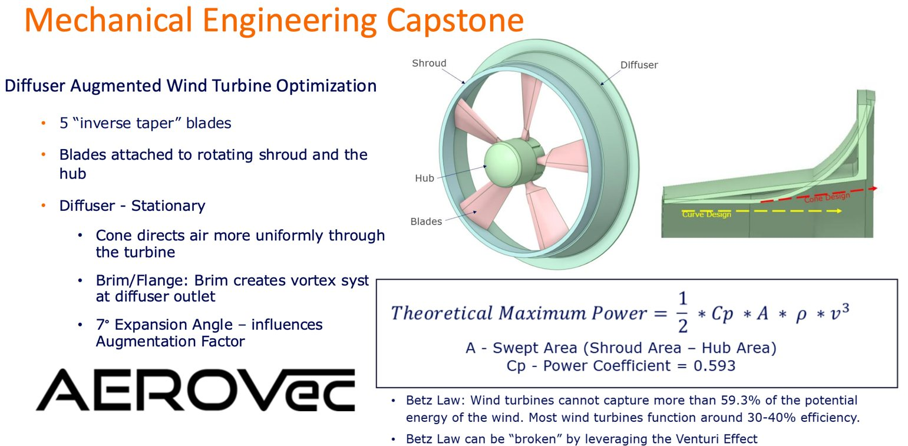
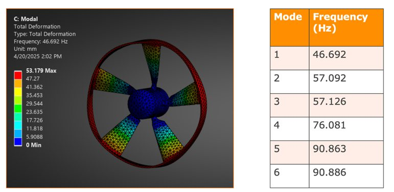
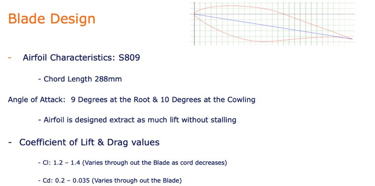
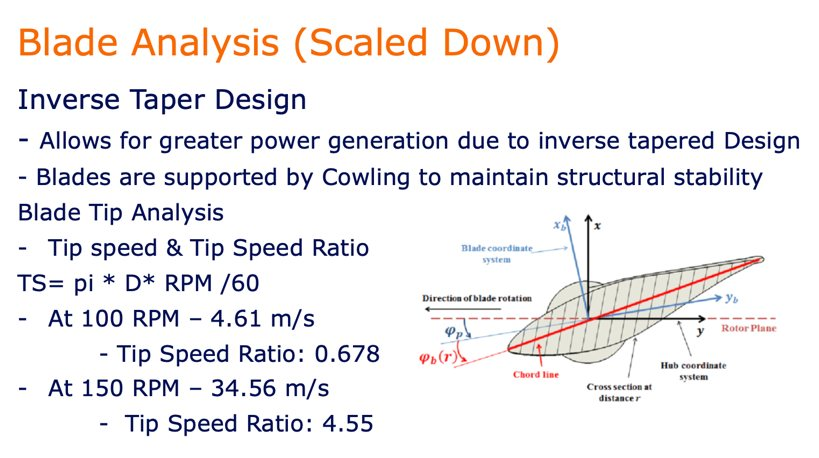
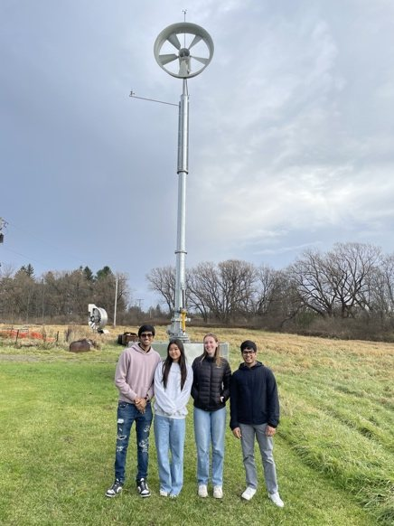
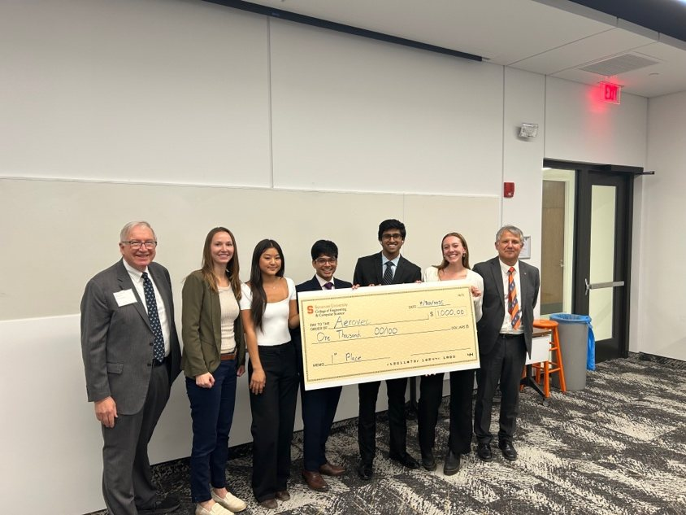
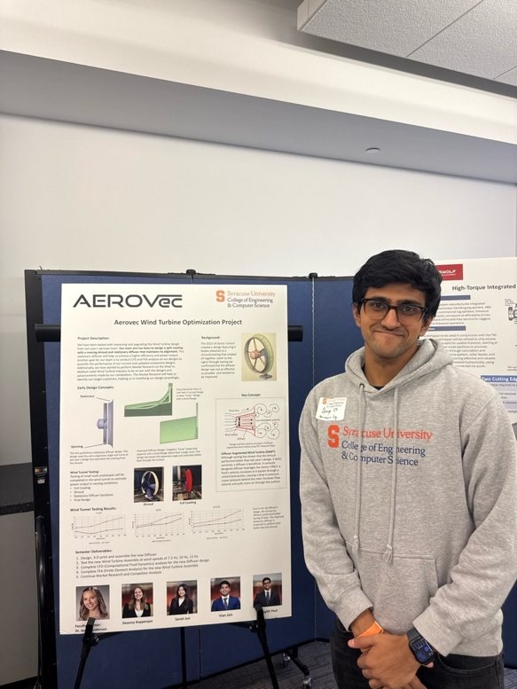

Gallery








Team Aerovec redesigned a Diffuser Augmented Wind Turbine to push more air through the rotor. The design uses the Venturi effect: the diffuser speeds up the flow and creates low pressure behind the turbine, increasing mass flow and power potential.
The team separated the stationary diffuser from the rotating assembly and developed a rotating shroud to hold the inverse-taper blades, which improved structural reliability. We studied both axial-gap and radial-gap diffuser layouts.
Computational fluid dynamics (CFD) was meant to validate the diffuser, but meshing challenges and limited computing power prevented accurate modeling of the full rotor and diffuser flow. The project shifted to engineering analysis, finite element analysis (FEA), prototyping and wind tunnel testing.






